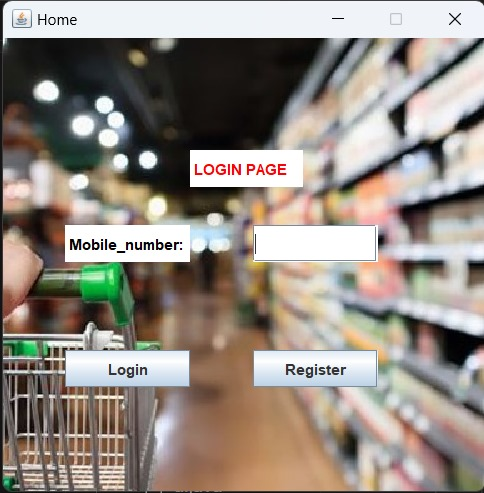

Supermarket Billing System
INTRODUCTION:
Project allocated to our team is Super market billing system. It is single
User interface.
This Mini project of Super market billing system is purely made in java,
with a good user-friendly interface which lets user selects the various
items in order to generate the invoice and bills.
A supermarket billing system is a computerized system used in
supermarkets and other retail stores to manage and process customer
transactions.
OBJECTIVE
The main objective of this project is It is basically a graphical user
interface used for generating invoices and receipts for customers on
their purchases in the super market and reduce manual errors.
MODULE DESCRIPTION:
There are four windows consists of Text fields that the user is required
to fill the general information in order to login to home page and also
buttons to select the items.
- Login page
- Register page
- Home page
-
Billing page
➢ LOGIN PAGE:

- Login page consists of text field that user need to enter
mobile no and two buttons Login and register
- If you are new to this super market we need to register on
click the Register button
- If you are an existing customer you can login by Using
your mobile no
-
As soon As the password gets updated you will be taken to ums portal
➢ REGISTER PAGE:
- Register page contains two text fields and button that user
need to enter mobile no and name and click on register
button
- The entered values are stored in a table of database
➢ HOME PAGE:
- Home page consists of list of items that customer need to
select and one button to add items and reduce items
- Billing Page consists of General information of customer
like Mobile No, Name of the customer and Items purchased
by the Customer and its prices and Total Money of the items
including GST
➢ LIBRARIES USED:
- This project uses Jframe library which is used to make the G.U.I.
- Some modules of Jframe used are buttons, Text fields, labels and
actionlistener
- All here are used to generate the invoices and receipts for customer.